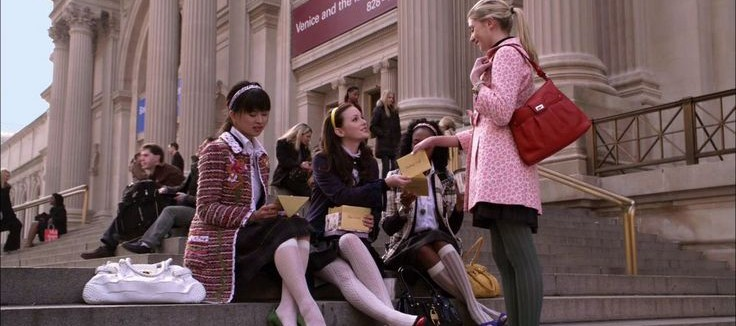
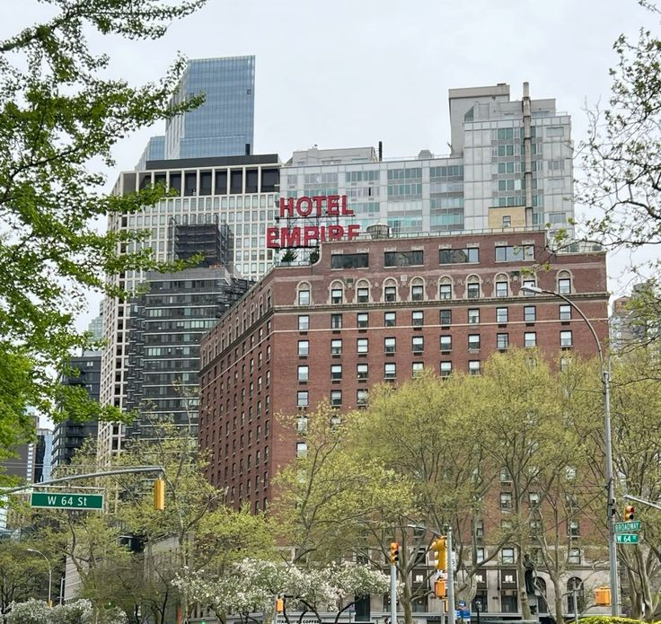
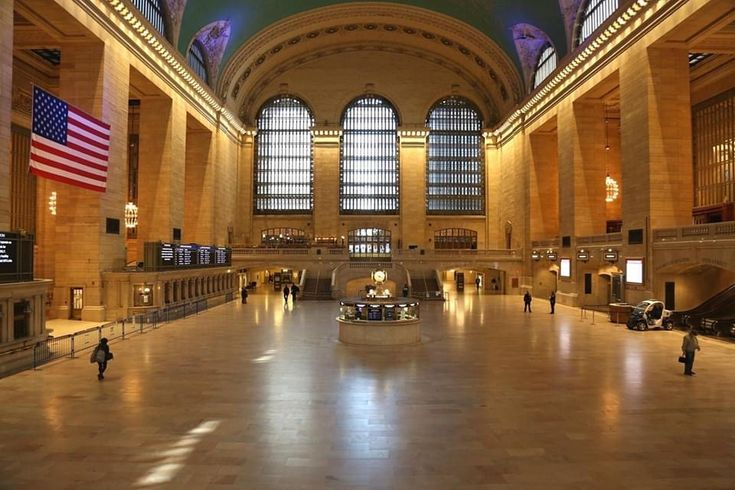
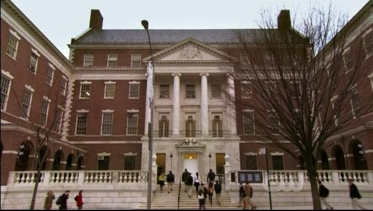
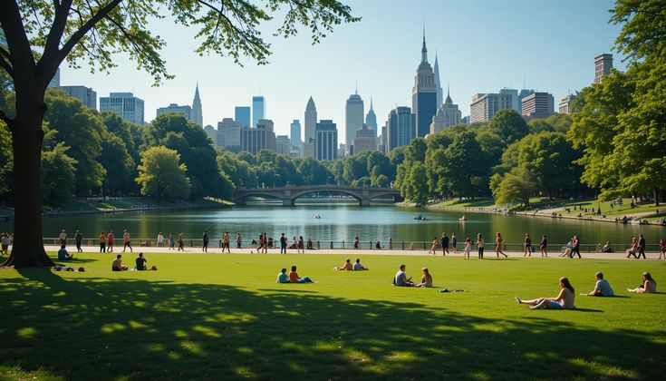
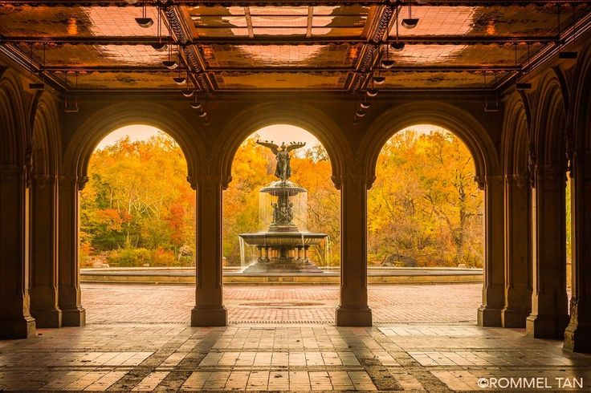
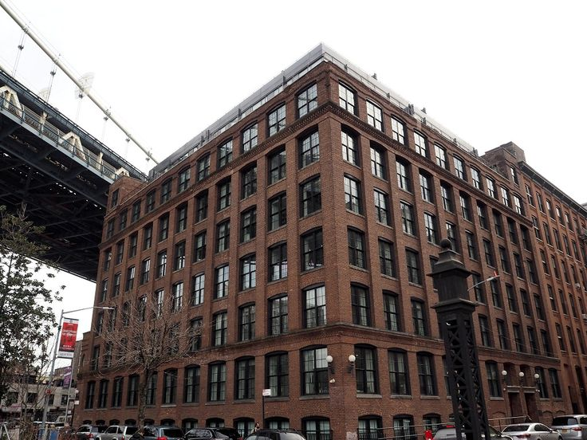
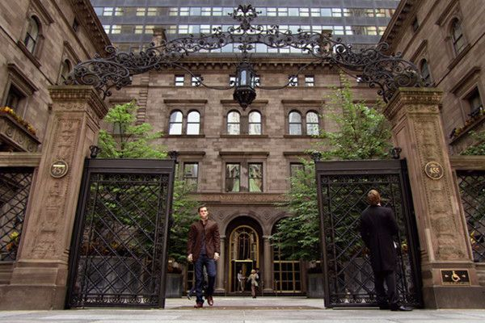
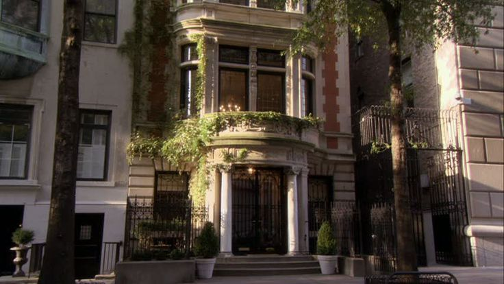
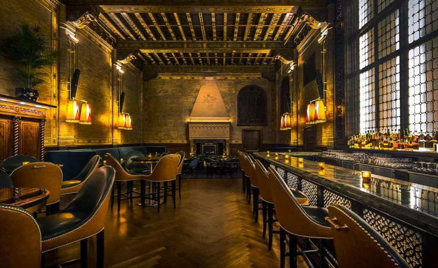

El punto de encuentro de Blair y sus amigas. Las escalinatas del MET se convirtieron en uno de los lugares más icónicos de toda la serie.
EXPLORE NEW YORK
Descubrí los escenarios más icónicos donde transcurre la historia de Gossip Girl.

El punto de encuentro de Blair y sus amigas. Las escalinatas del MET se convirtieron en uno de los lugares más icónicos de toda la serie.

El hotel de Chuck Bass simboliza su independencia y aparece durante gran parte de las temporadas.

La primera escena de Gossip Girl comienza exactamente aquí con la llegada de Serena.

El exterior pertenece al Museum of the City of New York y representa el colegio de Blair y Serena.

Escenario de incontables caminatas, citas y despedidas entre los protagonistas.

Una de las fuentes más famosas de Central Park y escenario de varios momentos románticos.

El hogar de Dan, Jenny y Rufus en Brooklyn. Representa el contraste con Manhattan.

El elegante departamento de Serena y Lily sobre la Quinta Avenida.

La casa familiar de Nate, marcada por la presión política y económica.

Un bar escondido dentro de Grand Central con una estética totalmente Gossip Girl.